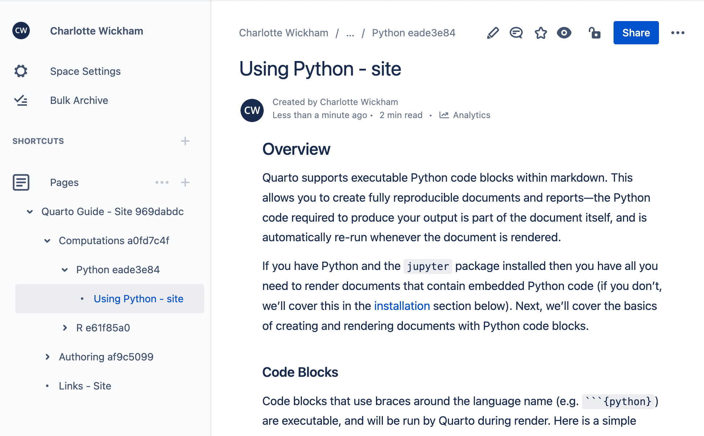

This post is part of a series highlighting new features in the 1.3 release of Quarto. Get the latest release at https://quarto.org/docs/download.
Atlassian Confluence is a publishing platform for supporting team collaboration. Confluence has a variety of hosting options which include both free and paid subscription plans.
Quarto 1.3 adds support for publishing individual documents, as well as projects composed of multiple documents into Confluence Spaces.



Managing Confluence content with Quarto allows you to author content in Markdown, manage that content with your usual version control tools like Git and GitHub, and leverage Quarto’s tools for including computational output.
If you’re curious about using Confluence Publishing for your own project, head to the Confluence Publishing page of the pre-release highlights to learn more.